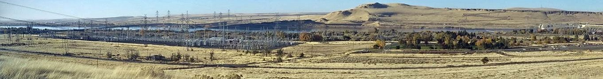
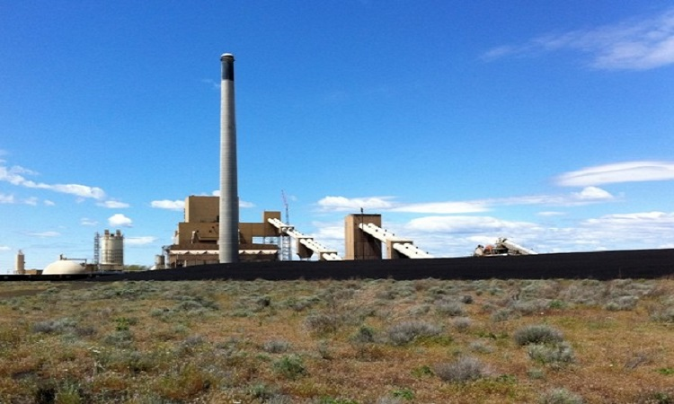
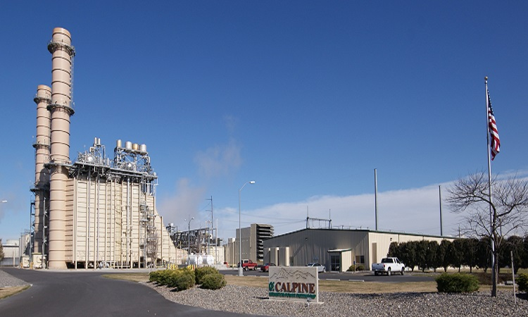
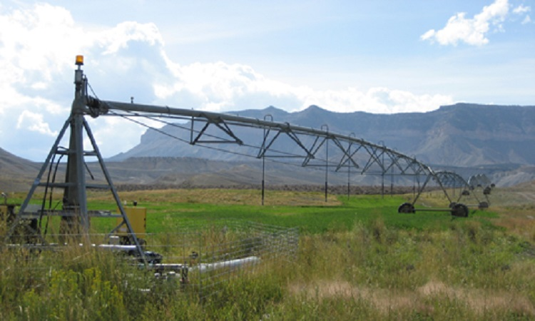
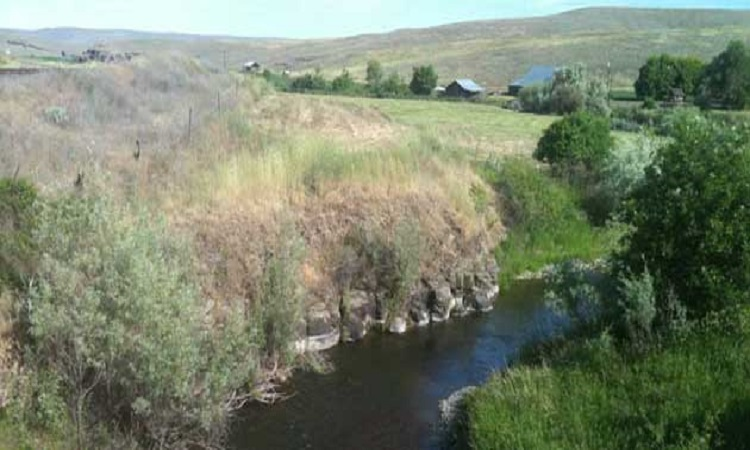

Logo
HOME
ABOUT
What is InterACTWEL
Who Uses InterACTWEL
Why InterACTWEL
RESEARCH TEAM
RESOURCES
MODELS
DATA
MAPS
PUBLICATIONS
MEETINGS & EVENTS
CONTACT US
Login
INTERACTWEL

Food

Energy
ENERGY ENERGY ENERGY ...

Land
Energy

Water
Previous
Next
News
• InterACTWEL.
workshop
• InterACTWEL.
Events
• InterACTWEL.
Interactive Adaptation and Collaboration Tool for managing Water, Energy and Land
A secure and intelligent computer-aided decision support system for local food, energy, and water sectors
_____________________________________
Water
Land
Energy